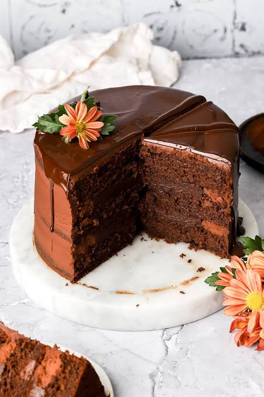
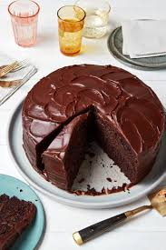

Chocolate Cake
Chocolate Cake is a rich, soft, and delicious dessert loved by people of all ages. It is made with cocoa powder, flour, sugar, eggs, and butter, then baked until moist and fluffy. It is perfect for birthdays, celebrations, or as a sweet treat with a cup of tea or coffee.
Ingredients
Before you begin, gather the following ingredients:
- 2 cups all-purpose flour
- 2 cups sugar
- ¾ cup cocoa powder
- 2 teaspoons baking powder
- 1 teaspoon baking soda
- 2 eggs
- 1 cup milk
- ½ cup vegetable oil
- 1 teaspoon vanilla extract
- 1 cup hot water
Instruction
Follow these numbered instructions step-by-step for the best results:
- Preheat the oven to 180°C (350°F).
- Grease and flour a cake pan.
- Mix the flour, sugar, cocoa powder, baking powder, and baking soda in a large bowl.
- Add the eggs, milk, oil, and vanilla extract, then mix well.
- Slowly stir in the hot water until the batter is smooth.
- Pour the batter into the prepared cake pan.
- Bake for 30–35 minutes or until a toothpick inserted into the center comes out clean.
- Let the cake cool before serving or decorating with chocolate frosting.
Quick Recipe Fact
| Information |
Value |
| Preparation Time
| 15 Minutes |
Cooking Time
| 35 Minutes |
Servings |
8 |
| Difficulty |
Easy |
Tips
- Use fresh ingredients for the best taste.
- Do not overmix the batter.
- Check the cake with a toothpick before removing it from the oven.
- Allow the cake to cool completely before frosting.

Enjoy your delicious Chocolate cake with this amazing recipe